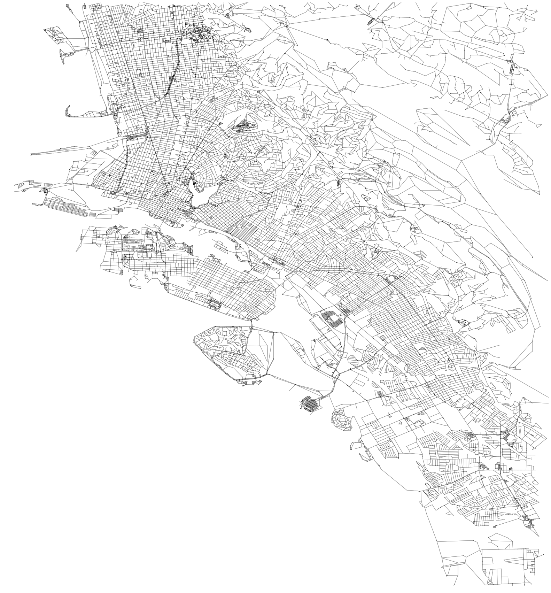

Plot Networks¶
UrbanAccess offers some basic plotting methods to visualize your UrbanAccess network data.
For example you can:
Plot the transit network
 AC Transit and BART transit network for Oakland, CA
AC Transit and BART transit network for Oakland, CA
Plot the street network  Pedestrian network for Oakland, CA
{kind=link}
Plot the travel times on the integrated network
 Integrated AC Transit and BART transit and pedestrian network travel times for Oakland, CA
Integrated AC Transit and BART transit and pedestrian network travel times for Oakland, CA
-
urbanaccess.plot.plot_net(nodes, edges, x_col=None, y_col=None, from_col=None, to_col=None, bbox=None, fig_height=6, margin=0.02, edge_color='#999999', edge_linewidth=1, edge_alpha=1, node_color='black', node_size=15, node_alpha=1, node_edgecolor='none', node_zorder=3, nodes_only=False)¶ plot urbanaccess network nodes and edges
Parameters: nodes : pandas.DataFrame
edges : pandas.DataFrame
x_col : str, optional
x coordinate column in nodes dataframe
y_col : str, optional
y coordinate column in nodes dataframe
from_col : str, optional
name of column to use for ‘from’ node id
to_col : str, optional
name of column to use for ‘to’ node id
bbox : tuple, optional
Bounding box formatted as a 4 element tuple: (lng_max, lat_min, lng_min, lat_max) example: (-122.304611,37.798933,-122.263412,37.822802) a bbox can be extracted for an area using: the CSV format bbox from http://boundingbox.klokantech.com/ if None bbox will be calculated from spatial extents of data
fig_height : int
matplotlib figure height in inches
margin : float
margin around the figure
edge_color : string
color of the edge lines
edge_linewidth : float
width of the edge lines
edge_alpha : float
opacity of the edge lines
node_color : string
node color
node_size : int
node size
node_alpha : float
node opacity
node_edgecolor : string
the color of the node border
node_zorder : int
zorder to plot nodes, edges are zorder 2. A node_zorder 1 will plot nodes under the edges, 3 will plot nodes on top
nodes_only : bool
if true only the nodes will plot
Returns: fig, ax
-
urbanaccess.plot.col_colors(df, col, num_bins=5, cmap='spectral', start=0.1, stop=0.9)¶ Get a list of colors by binning a continuous variable column into quantiles
Parameters: df : pandas.DataFrame
col : string
the name of the column in the dataframe with the continuous variable
num_bins : int
how many quantiles
cmap : string
name of a colormap
start : float
where to start in the colorspace
stop : float
where to end in the colorspace
Returns: colors : list